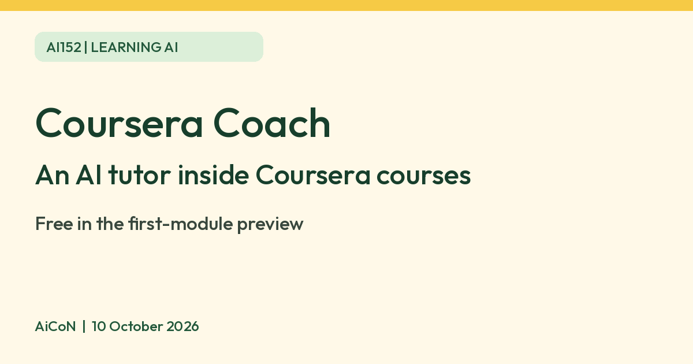

Coursera Coach: an AI tutor inside courses, free in the preview
Coursera Coach is an AI tutor inside Coursera courses. Coursera says you can preview the first module of most courses for free, with Coach included where the course has it. Full access normally needs payment or eligible financial aid; some community-impact courses remain free.

What it is
Coursera Coach is an AI learning assistant inside Coursera courses. Coursera says it answers questions about the course, gives feedback and helps you stay on track. Coursera describes it as an AI tutor you can reach with one click.
Is it free
Only in part. Coursera's August 2025 blog post says learners can preview the first module of most courses for free, including features like Coursera Coach "when available within the course". Full course access and certificates need a paid plan or a subscription, or financial aid if you qualify. We found no separate price for Coach itself, and no INR price on an official page.
How to try it
- Sign up free at coursera.org.
- Pick a course and open the free preview of its first module.
- Look for Coach inside the lesson, if the course has it, and ask a question about what you are watching.
Useful questions to ask
- Explain this lesson in simpler words.
- Give me an example of this idea.
- Ask me a practice question, then explain what I missed.
Use the replies as study support, not as a replacement for course readings. Confirm important definitions and calculations with the lesson.
Limits to know
- Coach is not in every course. Coursera says "when available within the course".
- The free part is the first module. After that, you need to pay or get financial aid.
- Coach is an AI. Check answers against the course material.
- We did not find an official page on Coach languages, so we quote none.
- India-specific Coach availability was not confirmed in a signed-in course. Check whether Coach appears in your chosen course; do not assume every account or course has it.
- We did not test it ourselves.
Frequently asked questions
Do I need to pay to try Coach?
Not for the free first-module preview, where Coach is available in the course. Paid access starts after that.
Sources: Coursera course preview post, Coursera landing page (not access proof), Coursera Coach blog. Checked 10 October 2026.